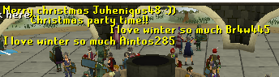

<div id="content">
<div id="article">
<div class="sectionHeader">
<div class="left">
<div class="right">
<h1 class="plaque">
                                    Adventure Bots
                                </h1>
</div>
</div>
</div>
<div class="section">
<div class="article_theme_1">
<div class="article">
<div class="topshadow">
<div class="bottomborder">
<div class="leftshadow">
<div class="rightshadow">
<div class="leftcorner">
<div class="rightcorner">
<div class="bottomleft">
<div class="bottomright">
<div class="links"> </div>
<br class="clear"/>
<div class="headings">
<span class="headertitleleft"><span class="headertitleright">Adventure Bots</span></span>
</div><br/>
<p>
                                                                        One thing that we remember most in Runescape probably above all are the pesky bots that ran around. 
                                                                        Everytime you tried to chop trees one would be there to steal it. While they were quite annoying they 
                                                                        did provide a lot of raw material to the ge that you might have believed players had collected but the 
                                                                        bulk of it was thanks to bots. Botting did make the game feel a lot less lonely due to collecting all 
                                                                        all the loot but never speaking to with you or they out right just out ranked you in the leaderboards. 
                                                                    </p>
<p> 

                                                                        Luckily, in 2009scape, you do not have this problem. The developers have created these amazing bots called 
                                                                        adventure bots. They are server sided bots that go out on <b>Adventures</b> as their name suggests. What is 
                                                                        really cool is they sell items they collect on their adventures to the grand exchange. Being a remake rsps 
                                                                        we will always have a lower playerbase and with this collection you will be able to play the game without the 
                                                                        feeling of constant ironman mode feeling. 

                                                                    </p>
<p>  
                                                                        Another feature of these amazing beings is they TALK unlike the RS player bots the server sided bots have a crap ton 
                                                                        of dialogue they go through to add to the immersion. They will also talk directly to the player and their dialogue 
                                                                        shows up in the chat to add also to the immersion. 
                                                                        <br/>
<br/>

<br/>
<br/>
                                                                        During Holiday seasons the bots change their dialogue to that holiday. So during Christmas they sing christmas songs, 
                                                                        they count down to christmas, and in the future possibly throw snow balls at the players or each other. They continue 
                                                                        to expand in dialogue and abilities over time and I'd love to add more to this page when the time has come. 


                                                                    </p>
</div>
<div style="margin-left: 6%;">
<tr>
<td colspan="2">
<div class="bold">Further Help</div>
                                                                        Need more help? Come chat with us!
                                                                        <ul class="further">
<li><a href="https://discord.gg/43YPGND">Discord</a>
</li>
<li>
<a href="https://matrix.to/#/#09scape-general:matrix.org">Matrix</a>
</li>
</ul>
<br/>
<br/>
</td>
</tr>
</div>
</div>
</div>
</div>
</div>
</div>
</div>
</div>
</div>
</div>
<div class="search">
<div class="searchtop">
<div class="bottombordershad">
<div class="leftshadow">
<div class="rightshadow">
<div class="topleft">
<div class="topright">
<div class="bottomleftshad">
<div class="bottomrightshad">
<div class="searchtext">
<p style="text-align: center;font-size:11px;font-weight:bold; margin-bottom: 0px;">

</p>
</div>
</div>
</div>
</div>
</div>
</div>
</div>
</div>
</div>
</div>
</div>
</div>
</div>